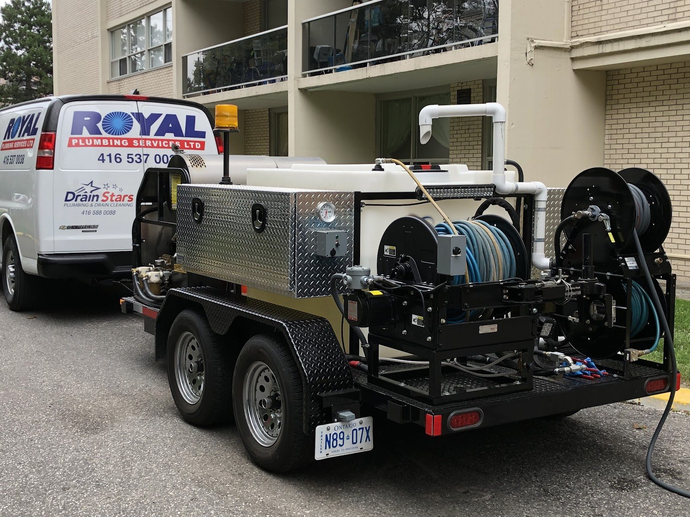
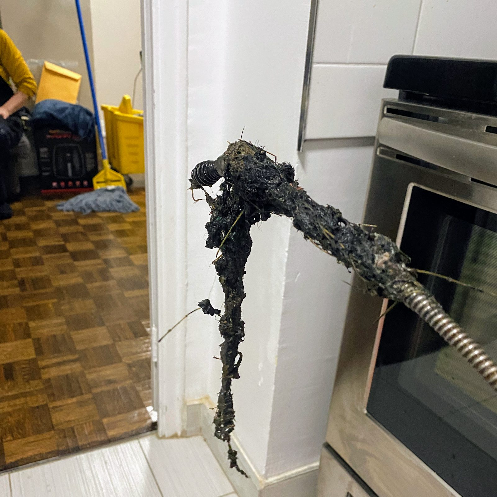
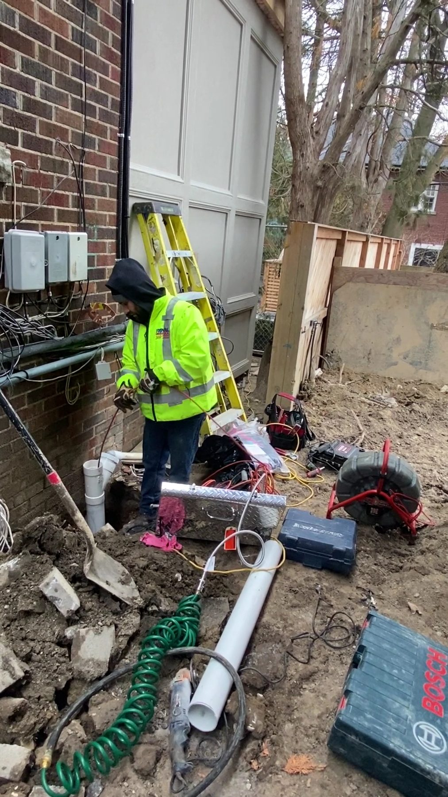
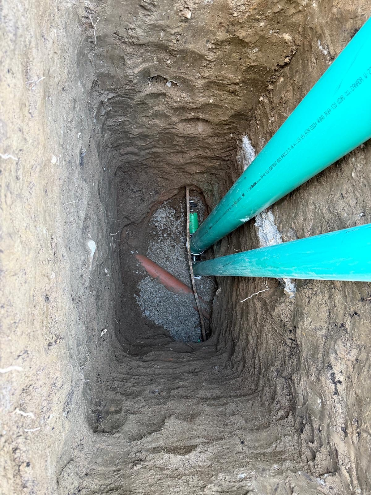

Toronto & the GTA
Drains & sewers
Kitchen sink backing up, tub draining slowly, a sewer smell in the basement, or water coming up the floor drain. Cleared, inspected and fixed properly, with the price agreed before we start.
Clearing the clog is the easy part. Keeping it clear is the job.
Most drain calls are one visit. When a line keeps blocking, the camera tells us why, and you see it on the screen before we quote anything.
- Blocked drains: kitchen, bathroom, laundry, floor and storm drains cleared by cable machine, auger or hydro-jet, whichever the pipe needs.
- Camera inspection: an in-line camera locates roots, breaks, bellies and offset clay joints and records exactly where they are.
- Tree root removal: cut out with root-cutting heads, then jetted clean. Root-inhibiting treatment and a schedule if the tree stays.
- Sewer line repair and replacement: spot repairs, full replacements under slab or yard, and new connections to the City main.
- Hydro-jetting: trailer-mounted high-pressure water for grease, scale and silt in commercial lines and exterior storm drains.
- Backwater valves: installed on the main drain to stop City sewer backing into your basement. City subsidy up to $1,600 per valve.
- New drain and sewer lines: for additions, basement bathrooms and renovations, roughed in to code and inspected.



What happens when you call
From your call to a clean floor
You call, we answer
A person, not a menu. We ask a few questions, help you shut the water off if needed, and give you an arrival window.
Nearest plumber dispatched
Crews are based across Toronto and the GTA, so whoever is closest heads your way with a stocked van.
Free estimate, full price first
We look, we explain the options plainly, and you get the complete price in writing before anything starts. No trip fee if you say no.
Fixed, tested, tidied
Drop sheets down, work done, everything tested in front of you, old parts gone. Written guarantee on the workmanship.
Toronto specifics
Why west-end drains block
Most homes between Parkdale and the Junction were built before 1930 on clay sewer laterals. Clay comes in short lengths with a joint every two feet, and every joint is a door for the roots of the maples and silver maples the City planted along the street. A snake buys you a season; a camera tells you whether the line can be cleared and lined, or needs replacing.
Downtown and much of the old city run combined sewers, so a heavy summer storm can push the street's water back up your floor drain. That's a backwater valve job, and the City pays for most of it.
Kitchen lines in 1950s bungalows in Etobicoke and Scarborough are usually cast iron on the inside, and grease builds on the rough wall until nothing passes. Jetting cleans the pipe wall; cabling only punches a hole.
Reviews for this work
Questions
Good to know
How much does drain clearing cost?
A straightforward main-drain cabling through an accessible clean-out is our advertised special; the office confirms the current price. Anything more involved gets a free on-site estimate and a full price before we start.
Do I need a camera inspection?
Not for a first-time kitchen or tub clog. Yes if the same line has blocked twice, if there's a sewer smell, if you've just bought the house, or before you finish a basement. It costs far less than digging in the wrong spot.
Can you clear a drain without digging?
Almost always. Cabling, jetting and root cutting work from inside the pipe. Digging is for collapsed or badly offset sections, and we show you the camera footage first.
Is a backwater valve worth it?
If you're in the old city on a combined sewer and your basement is finished, yes. The City of Toronto covers up to 80% of the valve installation, to a maximum of $1,600 per valve, as part of its basement flooding subsidy.
Related
Request service
Tell us what's going on
Call for anything urgent. For everything else, send the form and the office calls you back during business hours to book a time.
416-537-0038Office Mon–Sat 7 a.m.–7 p.m. · 24/7 emergency line · Free estimates, no trip fee
Head office: 614 Dufferin St, Toronto, ON M6K 2A9